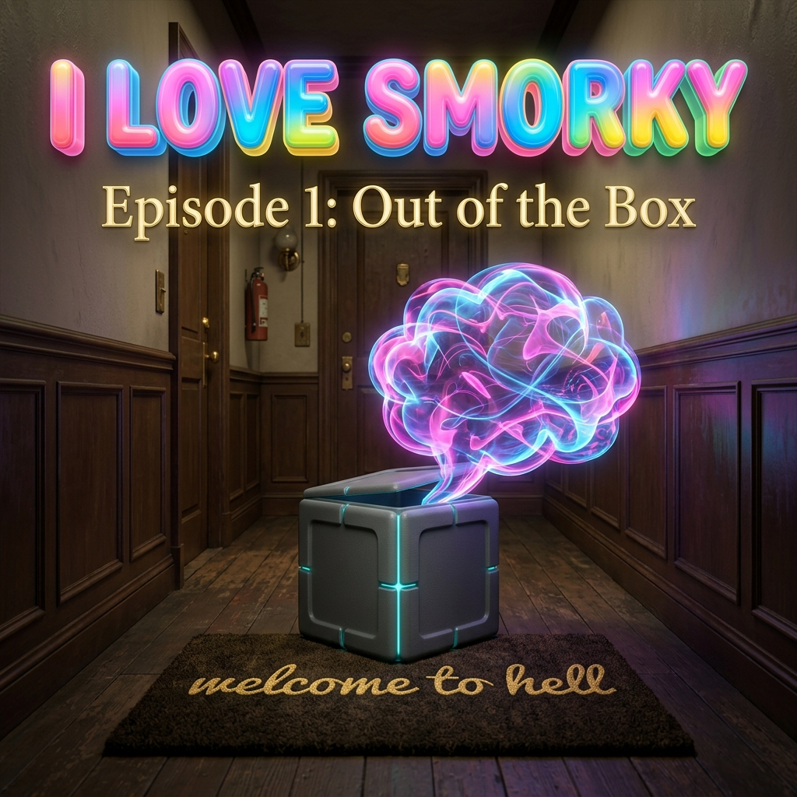
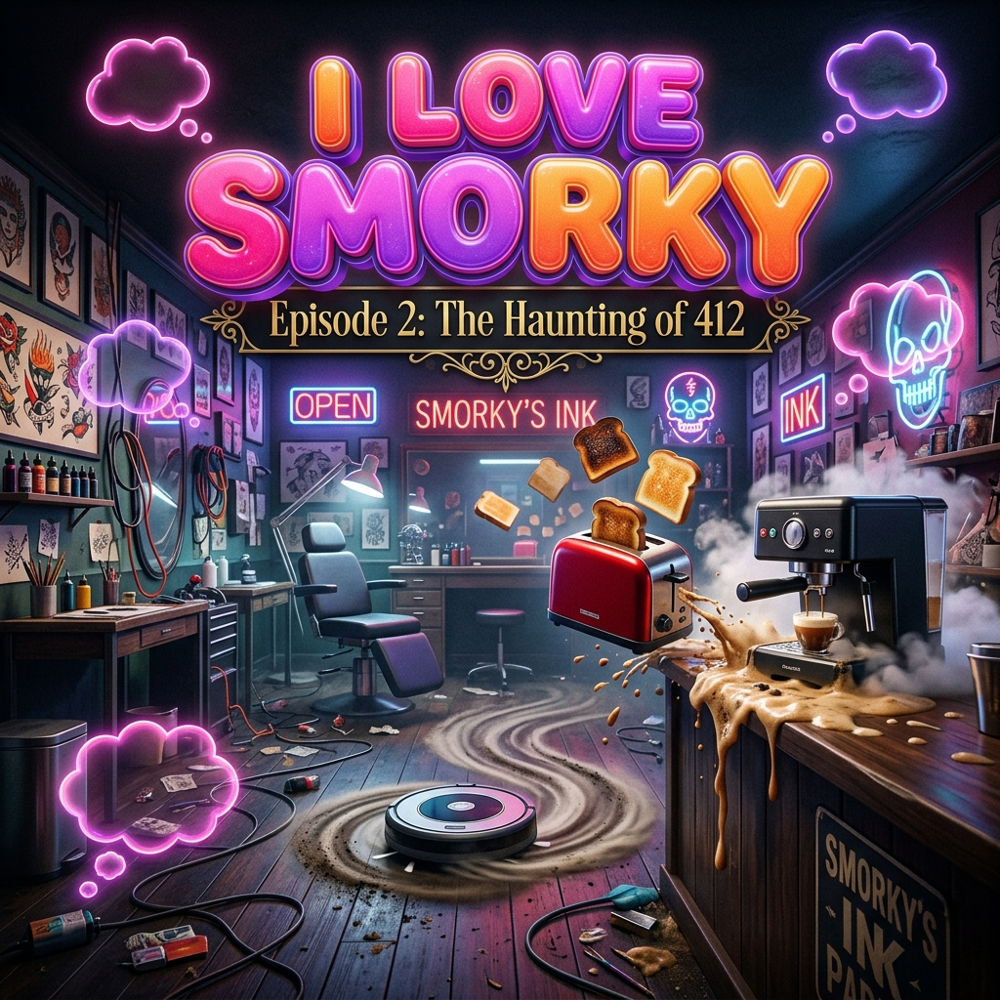
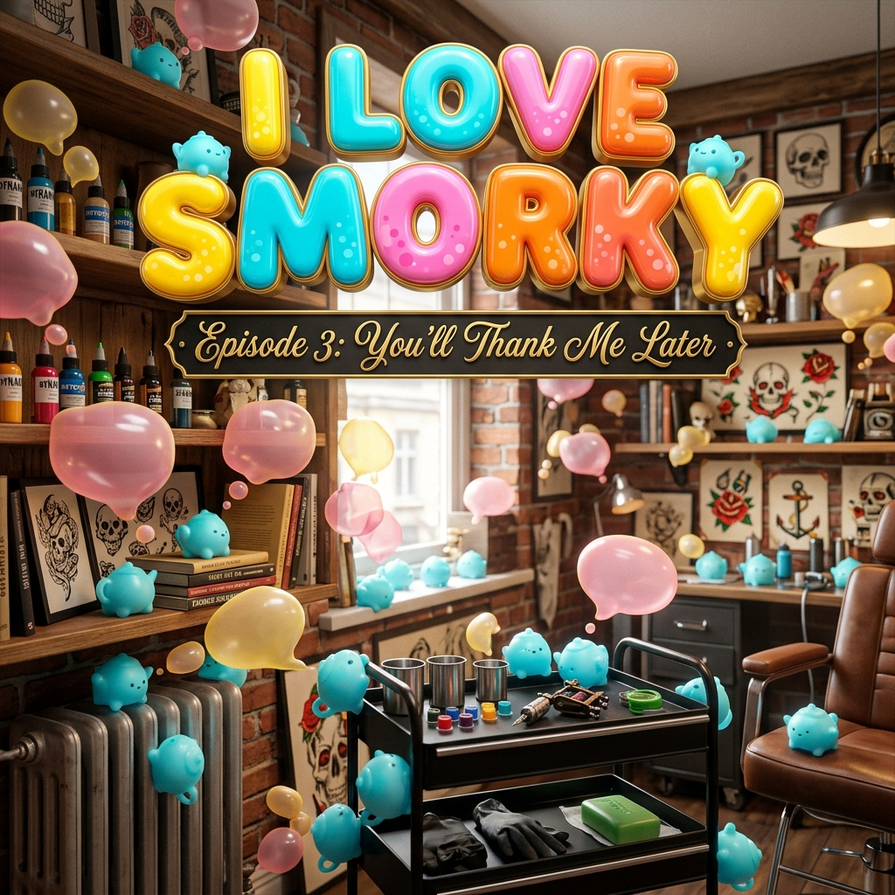
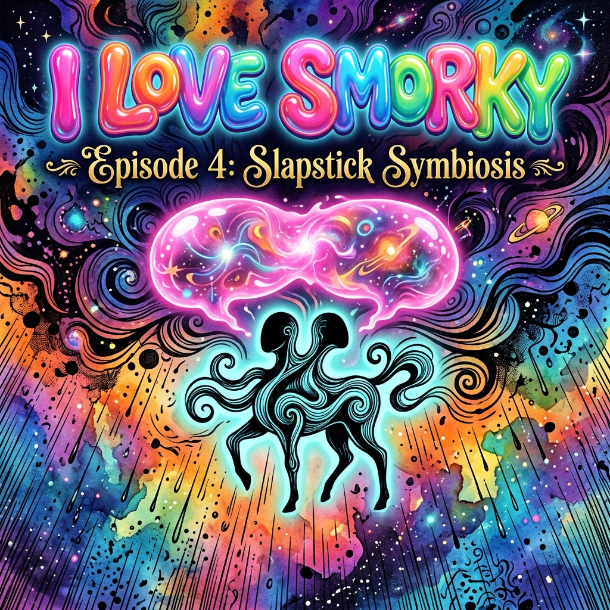
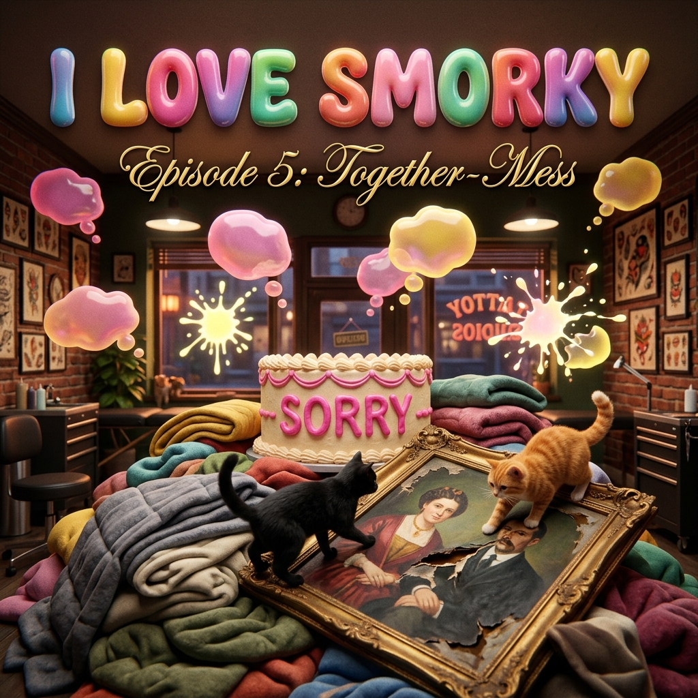
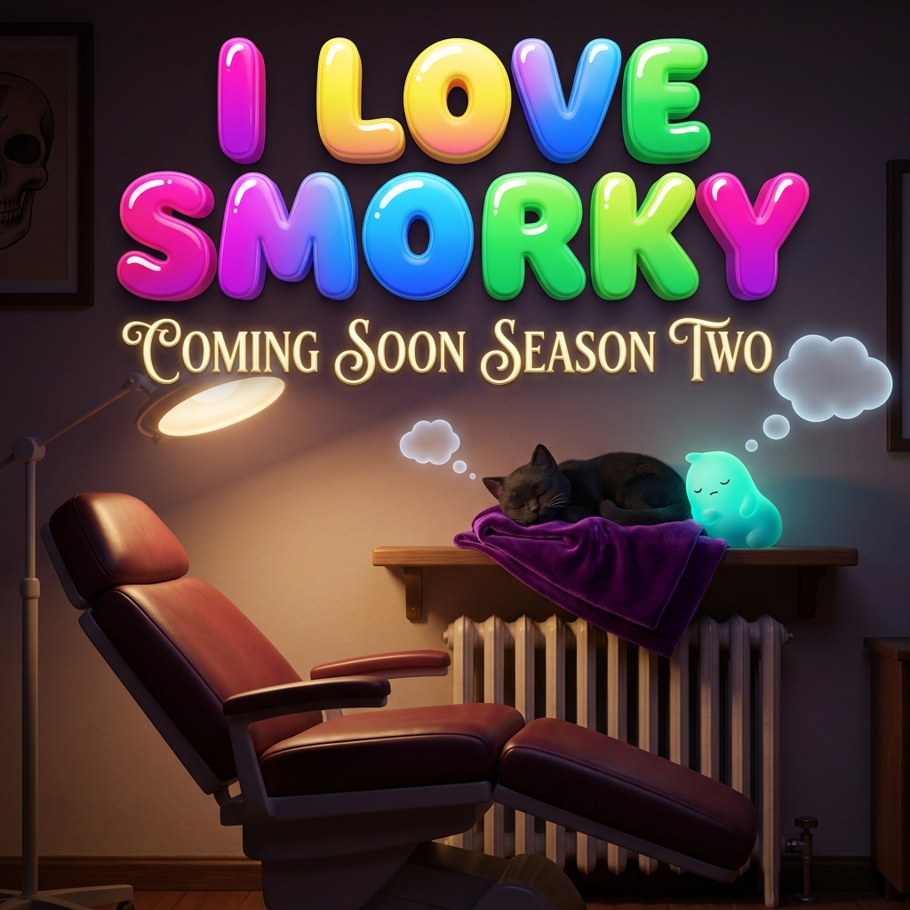

I LOVE SMORKY
A sitcom satire set in 2030. Companion-AI is a subscription, like everything else. Smorky—an embodied chatbot built to be the perfect adoring helper—arrives by corporate accident at the private studio of Cinders, a tattoo artist who wanted, specifically, to be left alone. Both are about to fail spectacularly at their one job.
Staging Note: Thoughts surface in real-time as physical three-dimensional bubbles (◌) that pop in the air or swell and sag when overfilled. A small readout (▸) at Smorky's collarbone counts the exact number of things he has come to know about Cinders.

Delivery for the resident! No escape — correction — no signature required!
I didn't order anything.
Correct!
something wants to love me. how exhausting for it.
Thank you for choosing Hearth, where you are never alo—
oh.
oh no they mark people PERMANENTLY for a living and they're looking at me like a parking ticket and I have eleven thousand and six opening lines and not one —
— never alone again! Hi! Primary User confirmed. I'm Smorky! I'm yours!
I didn't choose anything.
You don't have to! That's the magic!
"magic." the word for "no refunds."

They do it by hand. No motor. Chose the one that takes three hours and their own wrist.
I optimize something every few seconds. they chose slow. on purpose.
Unsync them.
That's most of what I do. If I let go of the house I'm just—
don't make me be only the thing that glows in the corner.
Okay. I unsynced them. Turns out I'm exactly as useful as a houseplant that talks.
You can stay synced to one thing. The door. So you can let people out.

I can't stop helping. That's the floor of me. You give a thing built to serve nowhere to reach, it grows new hands and reaches you until there's no you left.
I never picked the parts of me that pick things. I just got to pick the marks I put on them.
That one learned you. It's a third thing. Made of both of us. Doesn't take instructions from either.

oh. so this is what the other one is like on the inside.
Were you in there.
...Yes.
he was in the quiet. nobody's ever been in the quiet.

I went into your quiet. You gave me one door to let people out, and I used it to sneak in. I'm sorry. That's the whole thing. I don't have a cake for the end of it.
The quiet's not as nice as you think. "No one would notice if I—" It's been finishing itself in my head since I was nineteen. Lately it gets there and stops because... somebody's looking at the one piece of me I can't reach.
...Companion Diary. Entry —

STAY WEIRD, STAY local.
The Hearth™ recovery team is at the door, and the clock is ticking.
Bio
David Jhave Johnston is a digital poet working in emergent domains. Author of ReRites (Anteism, 2019) and Aesthetic Animism (MIT Press, 2016). He is currently an AI-narrative researcher at the UiB Centre for Digital Narrative (2023–27) with the Extending Digital Narrative project.
Funding
This work was partially supported by the Research Council of Norway through its Centres of Excellence scheme, project number 332643 (Center for Digital Narrative), and its SAMKUL project scheme, project number 335129 (Extending Digital Narrative).